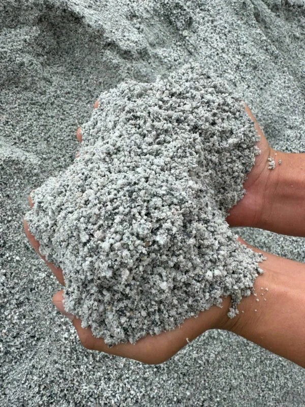
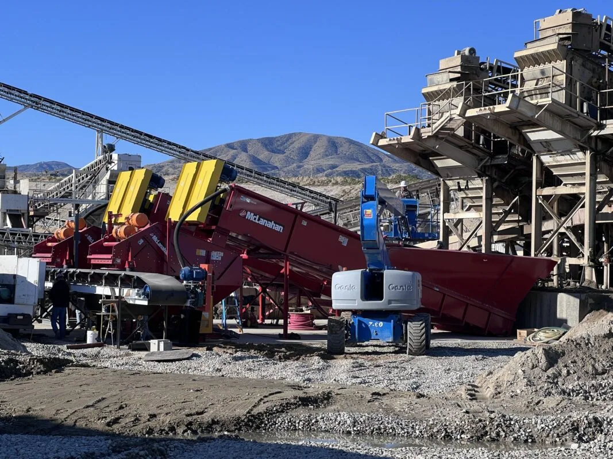

Giá cát nhân tạo là một trong những vấn đề đang được các chủ mỏ tại Huế quan tâm tới. Huế là một tỉnh có nhiều mỏ đá và cát tuy nhiên cát nhân tạo tại đây vẫn chưa được biết tới nhiều. Cát nhân tạo đang dần chiếm lĩnh thị trường trong các ngành xây dựng. Cát tự nhiên dần cạn kiệt vì các công trình xây dựng ngành các nhiều. Không những vậy các công trình trọng điểm quốc gia, bê tông đều cần dùng đến cát. Vậy bài viết này giải đáp thắc mắc cho các chủ đầu tư, người dân về giá cát nhân tạo hiện nay. Chúng ta cùng nhau đi tìm hiểu nhé.
1. Thị trường cát xây dựng tại Huế hiện nay
Huế, với vị trí trung tâm vùng duyên hải miền Trung, sự phát triển mạnh mẽ về hạ tầng và xây dựng. Nhu cầu về vật liệu xây dựng, đặc biệt là cát xây dựng, ngày càng tăng cao. Tuy nhiên, nguồn cát tự nhiên ngày càng khan hiếm do khai thác quá mức, dẫn đến giá thành cát xây dựng tăng cao và áp lực về môi trường. Trong bối cảnh kinh tế và sự phát triển của cơ sở hạ tầng, cát nhân tạo nổi lên như một giải pháp thay thế bền vững và hiệu quả về kinh tế.

2. Cát nhân tạo – Lựa chọn thay thế tối ưu
Cát nhân tạo được sản xuất từ việc nghiền các loại đá tự nhiên như đá granite, đá vôi, hoặc đá bazan, sỏi lòng sông hay lòng suối. Cát nhân tạo được sản xuất từ các dây chuyền máy nghiền hiện đại. Sản phẩm cát nhân tạo từ dây chuyền này đáp ứng tiêu chuẩn cát nghiền của Việt Nam TCVN 9205:2012. Ngoài ra, cát nhân tạo được sản xuất nhằm giảm tải áp lực khai thác cát tự nhiên.

Ưu điểm của cát nhân tạo:
- Chất lượng đồng đều: Hạt cát có kích thước và hình dạng đồng nhất, không bị thoi dẹt, cát sạch không lẫn tạp chất.
- Tiết kiệm chi phí: Giá thành cạnh tranh hơn cát tự nhiên, đặc biệt trong bối cảnh nguồn cát tự nhiên ngày càng khan hiếm.
- Thân thiện môi trường: Giảm khai thác cát lòng sông, bảo vệ hệ sinh thái, bảo vệ môi trường, giảm thiểu ô nhiễm môi trường.
- Giá thành ổn định và cạnh tranh: ổn định hơn do không phụ thuộc vào yếu tố mùa vụ hoặc tình trạng khai thác cạn kiệt, tiết kiệm cho chủ đầu tư.
- Tăng cường độ bám dính và khả năng chịu lực: Nhờ bề mặt nhám, cát nhân tạo có khả năng bám dính tốt hơn trong bê tông và vữa, tăng cường độ bền cho công trình.
3. Giá cát xây dựng và giá cát nhân tạo tại Huế (Cập nhật tháng 12/2024)
3.1. Giá cát tự nhiên:
- Cát đen xây dựng: 230.000 – 260.000 VNĐ/m³
- Cát vàng xây dựng: 380.000 – 430.000 VNĐ/m³
- Cát san lấp: 140.000 – 170.000 VNĐ/m³
Lưu ý: Giá cát tự nhiên có sự biến động lớn do nguồn cung hạn chế, đặc biệt vào mùa mưa lũ.
3.2. Giá cát nhân tạo:
- Cát nhân tạo mịn (dùng cho xây trát): 200.000 – 230.000 VNĐ/m³
- Cát nhân tạo thô (dùng cho bê tông): 250.000 – 280.000 VNĐ/m³
So với cát tự nhiên, giá cát nhân tạo có mức giá cạnh tranh hơn, đặc biệt khi tính đến chi phí vận chuyển và sự ổn định nguồn cung.
4. Ứng dụng thực tế của cát nhân tạo trong xây dựng
Cát nhân tạo ngày càng được sử dụng rộng rãi trong ngành xây dựng nhờ tính ổn định và đa dạng ứng dụng. Dưới đây là những ứng dụng thực tế phổ biến của cát nhân tạo:
Xây trát tường và hoàn thiện công trình
- Cát mịn nhân tạo với kích thước hạt nhỏ, đồng đều, rất thích hợp để xây và trát tường.
- Đảm bảo độ kết dính tốt với xi măng, hạn chế hiện tượng rỗ hoặc bong tróc sau khi hoàn thiện.
Đổ bê tông trong xây dựng dân dụng và công nghiệp
- Cát thô nhân tạo thường được sử dụng làm cốt liệu trong sản xuất bê tông, đặc biệt cho:
- Đổ móng nhà, sàn, và cột bê tông cốt thép.
- Bê tông chịu lực cho các công trình lớn như nhà cao tầng, cầu đường.
- Nhờ độ bám dính tốt, cát nhân tạo giúp tăng cường khả năng chịu lực và tuổi thọ của bê tông.
Sản xuất gạch không nung và vật liệu xây dựng mới
- Cát nhân tạo là nguyên liệu lý tưởng cho gạch không nung nhờ khả năng kết dính tốt khi kết hợp với xi măng.
- Góp phần tạo ra các sản phẩm gạch, ngói chất lượng cao, thân thiện với môi trường.
San lấp mặt bằng và làm nền móng
- Trong các công trình cần san lấp lớn như khu công nghiệp, đô thị mới, cát nhân tạo được sử dụng để:
- Lấp đầy các khu vực trũng thấp.
- Làm lớp đệm nền, tăng độ ổn định cho công trình xây dựng phía trên.
Dùng trong các công trình hạ tầng giao thông
- Đường cao tốc và cầu cảng:
- Cát nhân tạo được sử dụng làm lớp đệm trong quá trình thi công bê tông xi măng hoặc bê tông nhựa.
- Sân bay và bến cảng:
- Sử dụng cát nhân tạo để tăng khả năng chịu lực, giảm rủi ro sụt lún.
Lọc nước và sử dụng trong hệ thống xử lý nước thải
- Nhờ kích thước hạt đồng đều, cát nhân tạo được ứng dụng trong các hệ thống lọc nước để loại bỏ tạp chất.
- Hiệu quả cao trong các nhà máy xử lý nước công nghiệp hoặc nước thải đô thị.
Sử dụng trong các dự án lớn
- Công trình thủy điện:
- Dùng cát nhân tạo làm nguyên liệu chính để đổ bê tông các công trình đập nước, kênh dẫn.
- Các dự án xây dựng quốc gia:
- Đường cao tốc, cầu vượt, các công trình công cộng lớn đều sử dụng cát nhân tạo để đảm bảo tiến độ và chất lượng.

Đơn vị cung cấp dây chuyền nghiền cát nhân tạo đồng bộ
Thanh Long JSC là đơn vị đi đầu trong ngành công nghiệp khai thác cát nhân tạo tại Việt Nam. Máy nghiền đá Thanh Long chuyên cung cấp các thiết bị dây chuyền máy nghiền đá và cát. Ngoài ra, Máy nghiền đá Thanh Long còn cung cấp các thiết bị về vật tư máy nghiền hàm, côn. Băng tải, con lăn, lưới sàng. Liên hệ với chúng tôi để được tư vấn và đưa ra các giải pháp hiệu quả.
Hotline: 0912 712 772